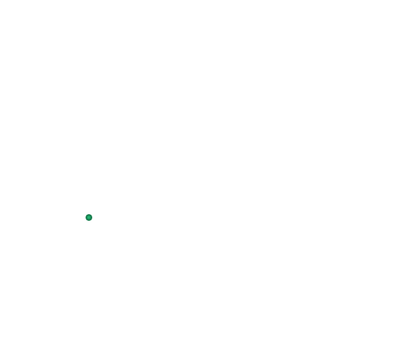
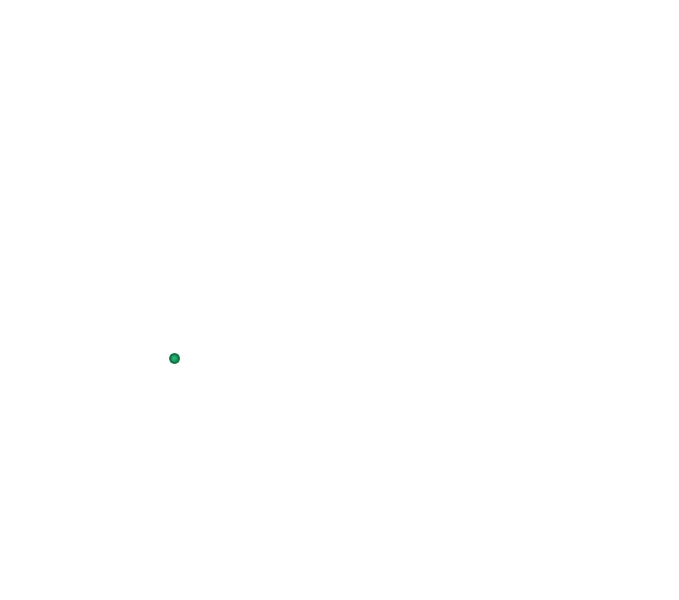
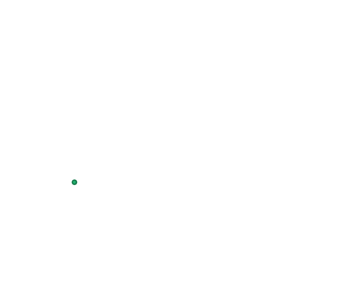
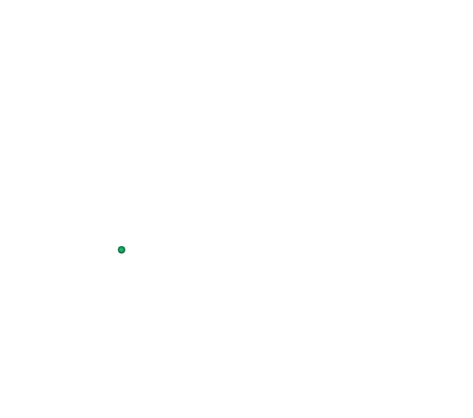
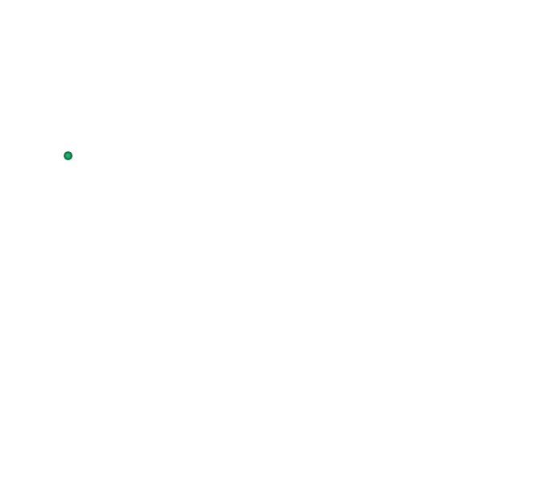
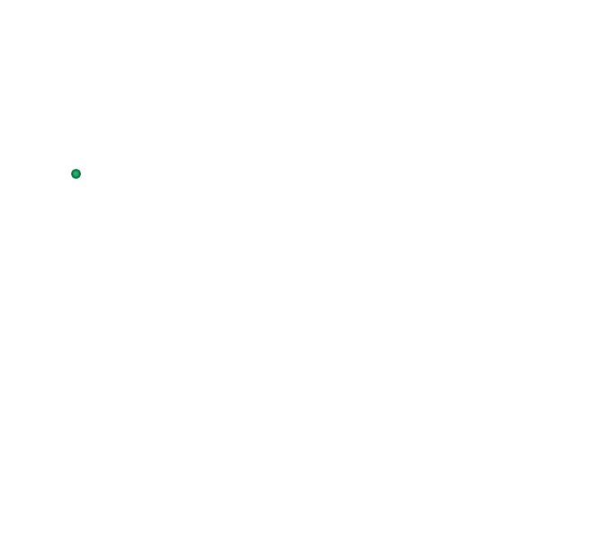

Мецово


 





 


Μέτσοβο
Γενικές πληροφορίες:
- Χώρα: Ελλάδα
- Έκταση: 101,908 τ.χλμ.
- Πληθυσμός: 2 503 (2011)
- Περιφέρεια: Ηπείρου
Χτισμένο αμφιθεατρικά σε μια δασωμένη αγκαλιά κάτω από τον αυχένα της Κατάρας, αυτού του σκληροτράχηλου πέτρινου όγκου της Πίνδου, το Μέτσοβο διατηρεί πεισματικά αναλλοίωτο τον παραδοσιακό του χαρακτήρα. Υπόδειγμα ορεινού οικισμού, που σφύζει από ζωή όλες τις εποχές του χρόνου, προσφέρει απλόχερα στους επισκέπτες του τόσες ομορφιές που δύσκολα απαντώνται σε αντίστοιχους προορισμούς.
Ιδιαίτερα κατά τη χειμερινή περίοδο, το φημισμένο βλαχοχώρι, γενέτειρα σπουδαίων εθνικών ευεργετών (Τοσίτσας, Στουρνάρας, Αβέρωφ κ.α), αποτελεί σταθερή αξία στον τουριστικό χάρτη της Ηπείρου. Μισοκρυμμένο στην ομίχλη ή τυλιγμένο σε λευκό μανδύα χιονιού μοιάζει με πίνακα ζωγραφικής που μας καλεί να το απολαύσουμε με όλες μας τις αισθήσεις.
Βουνίσια γοητεία
Τι να δούμε:Οι «χάρες» του Μετσόβου σε μια βόλτα
- Να δούμε θαυμαστούς χώρους τέχνης και πολιτισμού που μας συστήνουν μια ζώσα παράδοση.
- Να ξεναγηθούμε στο γκρίζο βασίλειο της πέτρας, στολισμένο από τις κόκκινες κεραμοσκεπές και τις πράσινες πινελιές της φύσης.
- Να θαυμάσουμε τα διώροφα αρχοντόσπιτα με τα χαγιάτια και τις βαριές ξύλινες πόρτες.
- Να ξεδιψάσουμε σε πετρόχτιστες βρύσες και να γευτούμε τα φημισμένα τοπικά εδέσματα.
- Να γεμίσουμε ενέργεια κάνοντας σπορ σε βουνά και ποτάμια.
Καρδιά του οικισμού είναι η κεντρική πλατεία, από τις διασημότερες της ορεινής Ελλάδας. Ανηφορίζουμε προς την Αγία Παρασκευή (15ου αι.), τον μητροπολιτικό ναό του χωριού, με το περίτεχνο ξυλόγλυπτο τέμπλο και τα ιερά κειμήλια ανεκτίμητης αξίας. Στα παγκάκια γύρω από το προαύλιο με τα πανύψηλα πλατάνια, αντικρίζουμε μια χαρακτηριστική μετσοβίτικη εικόνα: τους γέροντες με τα τσιγκελωτά τους μουστάκια, τις παραδοσιακές φορεσιές και τις ξύλινες γκλίτσες να κουβεντιάζουν στα βλάχικα, απολαμβάνοντας το πρώτο φως της ημέρας.
Λίγα μέτρα πιο πάνω, το αρχοντικό του Μιχαήλ Τοσίτσα στεγάζει το Μουσείο Λαϊκής Ηπειρωτικής Τέχνης και μαζί όλη τη λαογραφική ιστορία του Μετσόβου του 18ου αιώνα. Σε κοντινή απόσταση, συναντάμε την Πινακοθήκη Ευάγγελου Αβέρωφ, όπου εκτίθενται πίνακες και γλυπτά σπουδαίων Ελλήνων καλλιτεχνών. Για μια μικρή ανάπαυλα με θέα μπορούμε να επιλέξουμε το λόφο αναψυχής, όπου το 1668 ανεγέρθηκε το Κάστρο το οποίο καταστράφηκε το 1854 μαζί με ολόκληρο το χωριό. Ο Αβερώφειος Κήπος, μια πράσινη όαση 10 στρεμμάτων, φυτεμένη με όλα τα ενδημικά είδη δέντρων της Πίνδου, θα μας χαρίσει όμορφες εικόνες και ανάσες βουνίσιου αέρα, χαλαρώνοντας στο παγκάκι πίσω από το εκκλησάκι του Αγίου Γεωργίου.
Ακολουθώντας τα λιθόχτιστα καλντερίμια προς τον κάτω μαχαλά, τον πρώτο οικιστικό πυρήνα του 1008, θα επισκεφθούμε ακόμη δυο σημαντικά μοναστήρια, θεμελιωμένα κοντά στις όχθες του Μετσοβίτη ποταμού: τη Μονή της Παναγιάς με τον ανακαινισμένο νερόμυλο Γκίνα και την Μονή Αγίου Νικολάου με τις τοιχογραφίες του 17ου αι.
Σπονδή στην τοπική γαστρονομίαΤο πόσο σημαντικό κεφάλαιο αποτελεί η γαστρονομία για το Μέτσοβο θα το καταλάβετε με την πρώτη ματιά ή μάλλον με την πρώτη… μυρουδιά! Στις ταβέρνες της πλατείας οι σούβλες γυρίζουν από νωρίς, φορτωμένες με κάθε λογής κρεατικά. Εδώ στήνονται «επικά» φαγοπότια με κοντοσούβλι στη λαδόκολλα, πεντανόστιμο κοκορέτσι, χωριάτικα λουκάνικα, αλλά και πίτες… πάρα πολλές πίτες! Γύρω από την πλατεία βρίσκονται συγκεντρωμένα καταστήματα που εμπορεύονται το γευστικό κεφάλαιο της περιοχής: μια μεγάλη γκάμα γαλακτοκομικών προϊόντων, από την οποία ξεχωρίζουν τα κορυφαία τυριά μετσοβόνε και μετσοβέλα.
Στο πλαίσιο της γευστικής σας επιμόρφωσης, προσθέστε μια επίσκεψη στο Πρότυπο Τυροκομείο Ιδρύματος Τοσίτσα για να ενημερωθείτε αλλά και να προμηθευτείτε εκλεκτά γαλακτοκομικά προϊόντα, αλλά και στο Οινοποιείο Κατώγι Αβέρωφ όπου εμφιαλώνεται το ομώνυμο κρασί, από τα διασημότερα της χώρας.
Στα περίχωρα…Τεράστιοι όγκοι δασωμένων βουνών, τρία ποτάμια και μία τεχνητή λίμνη αποτελούν εγγύηση ότι σε καμία περίπτωση δεν θα πλήξετε! Για τους δραστήριους επισκέπτες, η περιοχή προσφέρεται για πεζοπορία σε σηματοδοτημένα μονοπάτια, ορειβασία, mountain bike, οff-road διαδρομές με τζιπ, καγιάκ, ράφτινγκ και φυσικά σκι στα χιονοδρομικά κέντρα στις θέσεις «Καρακόλι», «Προφήτης Ηλίας» και «Ζυγός».
Στην αντικρινή πλαγιά από το Μέτσοβο (6 χλμ.) βρίσκεται το Ανήλιο, με μεγάλη παράδοση στην επεξεργασία ξύλου. Στα νοτιοδυτικά (13 χλμ.) σάς περιμένει το Ανθοχώρι με το ορμητικό ρέμα Ρόνα να διασχίζει το χωριό. Δείτε τους αναστηλωμένους νερόμυλους που έχουν μετατραπεί πλέον σε Μουσείο Υδροκίνησης. Μοναδική εμπειρία αποτελεί ο γύρος της τεχνητής λίμνης των πηγών του Αώου ποταμού, με τα ελατοσκέπαστα νησάκια της και τα επανωτά φιόρδ που θα σας χαρίσει ανεπανάληπτες εικόνες, ιδιαίτερα την ώρα του ηλιοβασιλέματος.
Мецово
Основная информация:- Страна: Греция
- Площадь: 403 кв.км.
- Население: 2 503 (2011)
- Регион: Эпир
Построенный амфитеатром в лесных объятиях под перешейком Катара, этот скалистый каменный массив Пиндоса, Метсово упорно сохраняет свой традиционный характер. Макет горного поселения, в котором все время года кипит жизнь, щедро предлагает своим посетителям столько красот, сколько трудно найти в соответствующих местах.
Особенно в зимний сезон, знаменитая Влахохория (деревня населенная говорящими на валашском языке), место рождения великих национальных благотворителей (Тосицас, Стурнарас, Авероф и т.д.), является постоянной ценностью на туристической карте Эпира. Наполовину скрытая туманами или завернутая в белый снежный плащ, она выглядит как картина, которая приглашает нас насладиться ей всеми нашими чувствами.
Горное очарование
Что посмотреть:- Увидеть прекрасные места искусства и культуры, которые познакомят нас с живыми традициями.
- Совершить экскурсию по серому каменному царству, украшенному красными черепичными крышами и зелеными штрихами природы.
- Полюбоваться двухэтажными особняками с лоджиями и тяжелыми деревянными дверями.
- Утолить жажду в каменных фонтанах и отведать знаменитые местные деликатесы.
- Восполнить энергию, занимаясь спортом в горах и реках.
Сердцем поселения является центральная площадь, одна из самых известных в горной Греции. Мы поднимаемся к Айя Параскеви (15 век), столичная церковь деревни, с её богато украшенным резным по дереву иконостасом и священными реликвиями неоценимой ценности. На скамейках вокруг внутреннего двора с высокими платанами мы видим характерный мецовский образ: старейшины с закрученными усами, в традиционных костюмах и с деревянными посохами болтают на валашском, наслаждаясь первыми лучами солнца.
В нескольких метрах выше, в особняке Михаила Тосицы, находится Музей народного континентального искусства и вместе вся фольклорная история Мецово 18 века. Неподалеку мы находим галерею Евангелоса Аверофа, где выставлены картины и скульптуры великих греческих художников. Для короткого перерыва с видом мы можем выбрать холм отдыха, где в 1668 году был построен Замок, который был разрушен в 1854 году вместе со всей деревней. Сад Аверофейос, зелёный оазис площадью 10 акров, засаженный всеми эндемичными видами деревьев Пиндоса, подарит нам прекрасные образы и вдохнёт горный воздух, отдыхая на скамейке за часовней Святого Георгия.
Следуя по мощеным улочкам к нижней махале, первому жилому центру 1008 года, мы посетим еще два важных монастыря, основанных на берегу реки Метсовитис: монастырь Панагия с отреставрированной водяной мельницей Джина и монастырь Агиос Николаос с 17 века.
Вес в местной кулинарииНасколько важна кулинария для Мецово, вы поймете с первого взгляда или, скорее, с первого... запаха! В тавернах на площади рано переворачивают шашлык, нагруженный всевозможным мясом. Здесь представлены "эпические" блюда с контосувли (популярное простое мясное блюдо национальной греческой кухни) на пергаментной бумаге, вкусные кокореци (пасхальное блюдо из бараньих внутренностей), деревенские сосиски, а также пироги... слишком много пирогов! Вокруг площади сосредоточены магазины, торгующие вкусовым фондом района: широкий ассортимент молочных продуктов, из которых выделяются лучшие сыры Мецовоне и Мецовела.
В рамках вашего кулинарного обучения добавьте посещение сыроварни Tositsa Foundation, чтобы получить информацию и приобрести прекрасные молочные продукты, а также винодельню Katogi Averof, где разливают одноименное вино, одно из самых известных в стране.
На окраине…Огромные массивы лесистых гор, три реки и одно искусственное озеро - гарантия того, что вы ни в коем случае не пострадаете! Для активных посетителей район идеально подходит для пеших прогулок по отмеченным тропам, альпинизма, катания на горных велосипедах, внедорожных маршрутов на джипах, каякинга, рафтинга и, конечно, катания на лыжах на горнолыжных курортах в местах "Караколи", "Профитис Илиас" и "Весы".
На противоположном склоне от Мецово (6 км.) расположена деревня Анилион, с давними традициями в обработке древесины. К юго-западу (13 км.) Антохори ждет вас с бурлящим потоком Рона, пересекающим деревню. Посмотрите восстановленные водяные мельницы, которые теперь превращены в музей гидроэнергетики. Уникальный опыт - это экскурсия по искусственному озеру источников реки Аоос с его островками с ее покрытыми елями островами и верхними фьордами, которые подарят вам незабываемые впечатления, особенно на закате.